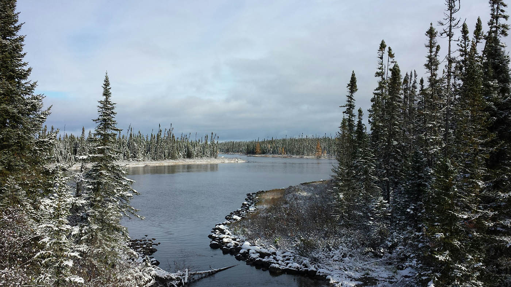
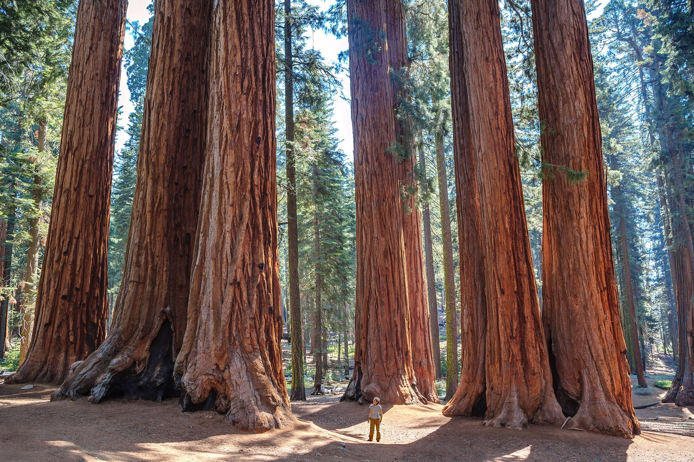
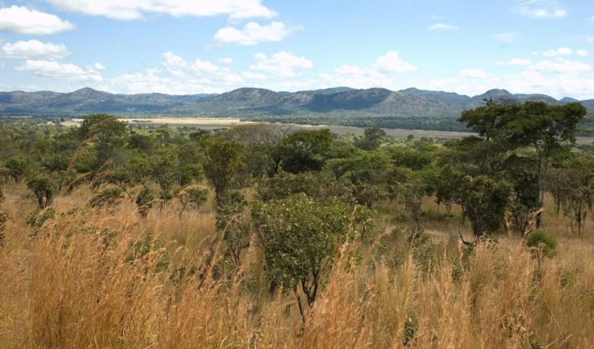
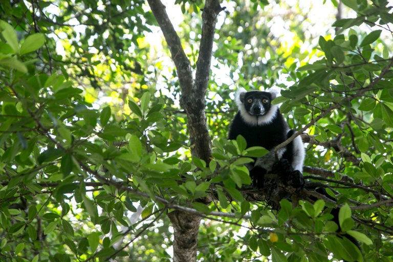

Different forests of the world
Boreal forest
This is the forest that dominates the far north. It goes arocess russia for thousands of kilometers as well as going through europe to north america. It contains 750 billion trees. It also is helping against the fight of climate change by holding 40 percent of the world’s carbon. This forest is not very active in the winter. In fact if you go there it feel almost empty. A notable mention of a animal that lives here. This animals is so rare it is almost mythical. This animal is a Seberian Tiger. They are an endangered species only about 600 hundred of them. This animal is amazing. It patrols almost 2,000 km of land in the forest to find enough prey. The forest is deprived of type of food for most animals including the Seberian Tiger. Animals like boars and birds have to eat pine nuts from pine cones to survive. Many animals also look for the supplements in the rivers. In autumn salmon leave the ocean to get to their ancestral spawning grounds. This is the biggest transfer of nutrients from one haibt to another. Animals like bald eagles and other predators depend on this river. . The boreal forest is very cold as it is in the north. It only has about 50-100 days without frost.
Red wood forests
Another example is the red woods forest located a little south compare to the Boreal forest. These forests used to dominate to pafic area now only 5% of them remain. The climate is very good here the pafic ocean brings mist to the forest and the trees thrive very nicely. There is a lot of heat that comes from the sun. This makes the forest grow wildfires. This is not actually so bad since the trees have adopted to this. Red Wood trees are fire resistant. The aftermath of the wildfires seem like total destruction though it actually isn’t that bad. Within only a few months. The forest will be full of flowers and trees. In fact many of the trees wouldn’t have gown if they didn’t get the fire.
Miombo
The next forest I want to talk about is the Miombo. This forest goes from angola in the west to Mozambique on the east. The Mimobo has animals from all over southern africa. The miombo is very dry and the main food for the animals are the trees of the leaf. I will get back to this later. Some notable mentions of animals that live in this forest is Hyenas and Elephants. Elephants don’t come to often though some families live in this forest. Hyenas are normally seen in the grasslands. There preferred habit are the forests. . They are endangered species as well. The Miombo is also home to many different types of trees. One odd tree is the Baobabas.
Madagascar forest
The final forest I would like to talk about is the Madagascar forest. This forest has been isolated for over 80 million years. This then causes it to have many different types of animals not anywhere different to earth. For example their are 40 different types of lemurs in this forest all unique to this forest. The top predator for this forest is called a Fossa. The Fossa is very dangerous and this is why some animals are notecternals. Some of the unique species include Madagascar Fody, Comet Moth and tomato frogs. This was a couple years ago now this forest is gone habited by humans. This makes it the most precious forest on earth. Here are four different examples of the biome I have chosen which is the forest.
